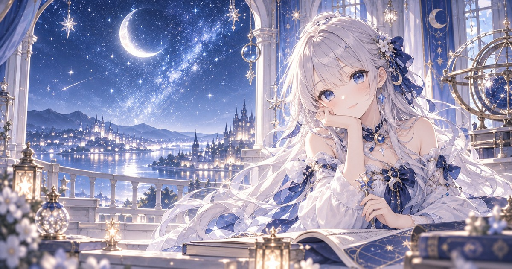

このサイトでできること
星々と月の占いでは、やさしい言葉で気持ちを整えるための占いを楽しめます。
- 星の三択占い
- タロット1枚引き
- 今日の運勢
- 月夜のおみくじ
どの結果も、今の心を見つめるための「ひとつのヒント」としてご利用ください。

星々と月の占いでは、やさしい言葉で気持ちを整えるための占いを楽しめます。
結果を「当たっている・外れている」だけで見なくても大丈夫です。心に残った言葉、少し気になった言葉、安心した表現などを手がかりに、自分の今を見つめてみてください。
月は毎晩かたちを変えます。それでも月が月であるように、揺れる日のあなたも、静かな日のあなたも、どちらも大切なあなたの一部です。
この場所が、答えを急ぐためではなく、ほんの少し自分をやさしく見つめる時間になりますように。
ここは答えを決めつける場所ではなく、少しだけ自分の内側に目を向けるための場所です。
どの言葉も、すべてを受け取る必要はありません。今夜あなたの心を少しだけあたためた、そのひとことがあれば十分です。
